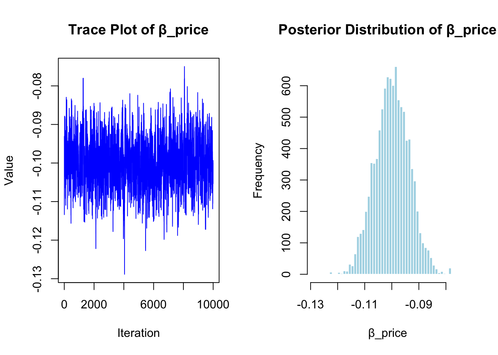

This assignment expores two methods for estimating the MNL model: (1) via Maximum Likelihood, and (2) via a Bayesian approach using a Metropolis-Hastings MCMC algorithm.
1. Likelihood for the Multi-nomial Logit (MNL) Model
Suppose we have \(i=1,\ldots,n\) consumers who each select exactly one product \(j\) from a set of \(J\) products. The outcome variable is the identity of the product chosen \(y_i \in \{1, \ldots, J\}\) or equivalently a vector of \(J-1\) zeros and \(1\) one, where the \(1\) indicates the selected product. For example, if the third product was chosen out of 3 products, then either \(y=3\) or \(y=(0,0,1)\) depending on how we want to represent it. Suppose also that we have a vector of data on each product \(x_j\) (eg, brand, price, etc.).
We model the consumer’s decision as the selection of the product that provides the most utility, and we’ll specify the utility function as a linear function of the product characteristics:
\[ U_{ij} = x_j'\beta + \epsilon_{ij} \]
where \(\epsilon_{ij}\) is an i.i.d. extreme value error term.
The choice of the i.i.d. extreme value error term leads to a closed-form expression for the probability that consumer \(i\) chooses product \(j\):
A clever way to write the individual likelihood function for consumer \(i\) is the product of the \(J\) probabilities, each raised to the power of an indicator variable (\(\delta_{ij}\)) that indicates the chosen product:
We will simulate data from a conjoint experiment about video content streaming services. We elect to simulate 100 respondents, each completing 10 choice tasks, where they choose from three alternatives per task. For simplicity, there is not a “no choice” option; each simulated respondent must select one of the 3 alternatives.
Each alternative is a hypothetical streaming offer consistent of three attributes: (1) brand is either Netflix, Amazon Prime, or Hulu; (2) ads can either be part of the experience, or it can be ad-free, and (3) price per month ranges from $4 to $32 in increments of $4.
The part-worths (ie, preference weights or beta parameters) for the attribute levels will be 1.0 for Netflix, 0.5 for Amazon Prime (with 0 for Hulu as the reference brand); -0.8 for included adverstisements (0 for ad-free); and -0.1*price so that utility to consumer \(i\) for hypothethical streaming service \(j\) is
where the variables are binary indicators and \(\varepsilon\) is Type 1 Extreme Value (ie, Gumble) distributed.
The following code provides the simulation of the conjoint data based on the utility specification described above. Each respondent faces a series of choice tasks, and their selections are determined by both the systematic utility from product attributes and a random error term drawn from a Gumbel distribution. This setup mimics how real respondents might make decisions in a discrete choice experiment.
Code
# set seed for reproducibilityset.seed(123)# define attributesbrand <-c("N", "P", "H") # Netflix, Prime, Huluad <-c("Yes", "No")price <-seq(8, 32, by=4)# generate all possible profilesprofiles <-expand.grid(brand = brand,ad = ad,price = price)m <-nrow(profiles)# assign part-worth utilities (true parameters)b_util <-c(N =1.0, P =0.5, H =0)a_util <-c(Yes =-0.8, No =0.0)p_util <-function(p) -0.1* p# number of respondents, choice tasks, and alternatives per taskn_peeps <-100n_tasks <-10n_alts <-3# function to simulate one respondent’s datasim_one <-function(id) { datlist <-list()# loop over choice tasksfor (t in1:n_tasks) {# randomly sample 3 alts (better practice would be to use a design) dat <-cbind(resp=id, task=t, profiles[sample(m, size=n_alts), ])# compute deterministic portion of utility dat$v <- b_util[dat$brand] + a_util[dat$ad] +p_util(dat$price) |>round(10)# add Gumbel noise (Type I extreme value) dat$e <--log(-log(runif(n_alts))) dat$u <- dat$v + dat$e# identify chosen alternative dat$choice <-as.integer(dat$u ==max(dat$u))# store task datlist[[t]] <- dat }# combine all tasks for one respondentdo.call(rbind, datlist)}# simulate data for all respondentsconjoint_data <-do.call(rbind, lapply(1:n_peeps, sim_one))# remove values unobservable to the researcherconjoint_data <- conjoint_data[ , c("resp", "task", "brand", "ad", "price", "choice")]# clean uprm(list=setdiff(ls(), "conjoint_data"))
3. Preparing the Data for Estimation
The “hard part” of the MNL likelihood function is organizing the data, as we need to keep track of 3 dimensions (consumer \(i\), covariate \(k\), and product \(j\)) instead of the typical 2 dimensions for cross-sectional regression models (consumer \(i\) and covariate \(k\)). The fact that each task for each respondent has the same number of alternatives (3) helps. In addition, we need to convert the categorical variables for brand and ads into binary variables.
In order to estimate the MNL model, we need to reshape the data so that it includes one row per alternative, per choice task, per respondent. We also convert categorical variables (brand and ad format) into binary indicators using dummy coding, with Hulu and ad-free as the reference categories. This format allows us to calculate utility values and model choice behavior based on attribute-level part-worths.
Code
# required librarieslibrary(dplyr)library(tidyr)# work with simulated conjoint_datadf <- conjoint_data# convert to factors with reference levelsdf$brand <-relevel(factor(df$brand), ref ="H") # Hulu is referencedf$ad <-relevel(factor(df$ad), ref ="No") # No ads is reference# create dummy variables, no intercept to avoid collinearityX <-model.matrix(~ brand + ad -1, data = df)X <-as.data.frame(X)# rename to match previous conventioncolnames(X) <-gsub("brandN", "brand_N", colnames(X))colnames(X) <-gsub("brandP", "brand_P", colnames(X))colnames(X) <-gsub("adYes", "ad_Yes", colnames(X)) # after setting "No" as reference, this should now appear# combine and reorderdf <-bind_cols(df %>%select(resp, task, price, choice), X)df <- df %>%select(resp, task, brand_N, brand_P, ad_Yes, price, choice)
4. Estimation via Maximum Likelihood
To estimate the parameters of the MNL model, we define a log-likelihood function that calculates the probability of each observed choice based on a given set of β β coefficients. The function computes the utility of each alternative, transforms it into a probability using the softmax formula, and sums the log-probabilities of the chosen alternatives. This function is then used in optimization to find the best-fitting parameters.
Code
# log-likelihood function for MNLlog_likelihood <-function(beta, data) {# unpack beta coefficients b_brand_N <- beta[1] b_brand_P <- beta[2] b_ad_Yes <- beta[3] b_price <- beta[4]# compute linear utility for all alternatives data$v <- b_brand_N * data$brand_N + b_brand_P * data$brand_P + b_ad_Yes * data$ad_Yes + b_price * data$price# normalize by task (3 alternatives per task) data <- data %>%group_by(resp, task) %>%mutate(exp_v =exp(v),denom =sum(exp_v),p = exp_v / denom,logp =log(p) ) %>%ungroup()# compute total log-likelihood over chosen alternatives ll <-sum(data$choice * data$logp)return(-ll) # return negative log-likelihood for minimization}
With the log-likelihood function defined, we now use the optim() function in R to find the maximum likelihood estimates of the four model parameters. The optimization uses the BFGS method and returns both the coefficient estimates and the Hessian matrix. We use the inverse of the Hessian to calculate standard errors and construct 95% confidence intervals for each parameter.
Maximum Likelihood Estimates with 95% Confidence Intervals
Parameter
Estimate
StdError
CI_Lower
CI_Upper
brand_N
0.9412047
0.1110396
0.7235710
1.1588384
brand_P
0.5016170
0.1111000
0.2838650
0.7193690
ad_Yes
-0.7320014
0.0878097
-0.9041053
-0.5598976
price
-0.0994816
0.0063336
-0.1118953
-0.0870678
5. Estimation via Bayesian Methods
We now estimate the MNL model using a Bayesian approach via the Metropolis-Hastings MCMC algorithm. We define weakly informative priors for the coefficients and generate 11,000 samples from the posterior distribution, discarding the first 1,000 as burn-in. The log-likelihood function from the MLE step is reused, and posterior draws are accepted or rejected based on the Metropolis-Hastings criterion. This approach gives us a full distribution for each parameter rather than just point estimates.
Posterior Means, Standard Deviations, and 95% Credible Intervals
Mean
StdError
CI_Lower.2.5%
CI_Upper.97.5%
brand_N
0.9412443
0.1179382
0.7128011
1.1688430
brand_P
0.5015382
0.1164215
0.2701299
0.7223185
ad_Yes
-0.7286072
0.0908280
-0.9124879
-0.5540624
price
-0.0998762
0.0063300
-0.1123195
-0.0873285
To visualize how the MCMC sampler behaved, we plot the trace and histogram for the posterior draws of β price β price
. The trace plot shows how the sampler explored the parameter space over time, while the histogram illustrates the shape and spread of the posterior distribution.
Code
# extract posterior samples for beta_pricebeta_price_draws <- posterior_draws[, "price"]# set up plotting area: 1 row, 2 plotspar(mfrow =c(1, 2))# trace plotplot(beta_price_draws, type ="l", col ="blue",main ="Trace Plot of β_price",xlab ="Iteration", ylab ="Value")# histogramhist(beta_price_draws, breaks =40, col ="lightblue", border ="white",main ="Posterior Distribution of β_price",xlab ="β_price")

The table below compares the parameter estimates obtained using Maximum Likelihood and Bayesian (posterior) methods. For each of the four model parameters, we report the mean estimate, standard deviation (or standard error), and the corresponding 95% confidence or credible intervals. The similarity between the two sets of results indicates that the data were strong enough that the prior had little influence on the posterior.
Comparison of MLE and Bayesian Estimates with 95% Intervals
Parameter
MLE_Mean
MLE_SD
MLE_Lower
MLE_Upper
Post_Mean
Post_SD
Post_Lower
Post_Upper
brand_N
0.941
0.111
0.724
1.159
0.9412443
0.1179382
0.7128011
1.1688430
brand_P
0.502
0.111
0.284
0.719
0.5015382
0.1164215
0.2701299
0.7223185
ad_Yes
-0.732
0.088
-0.904
-0.560
-0.7286072
0.0908280
-0.9124879
-0.5540624
price
-0.099
0.006
-0.112
-0.087
-0.0998762
0.0063300
-0.1123195
-0.0873285
The results from the Bayesian estimation were very similar to those from the maximum likelihood approach. For all four parameters — brand_N, brand_P, ad_Yes, and price — the posterior means from the MCMC sampling were nearly identical to the MLE point estimates. The 95% credible intervals from the Bayesian method also closely matched the 95% confidence intervals from the MLE. For example, the estimated effect of price was –0.0995 under MLE and –0.100 under the Bayesian approach, with intervals that overlapped almost exactly. This consistency suggests that the data were strong and informative enough that the weakly informative priors had little effect on the posterior. The key advantage of the Bayesian method is that it provides full distributions for each parameter, which is especially useful for visualizing uncertainty and interpreting model results more flexibly.
6. Discussion
Interpreting the Parameter Estimates
Even if the data hadn’t been simulated, the parameter estimates make intuitive sense. The fact that \(\beta_\text{Netflix} > \beta_\text{Prime}\) suggests that respondents preferred Netflix over Prime, all else equal. Since Hulu is the reference brand, both of these estimates are interpreted relative to it — meaning Netflix is the most preferred, Prime is somewhat preferred, and Hulu is the least preferred.
The negative sign on \(\beta_\text{price}\) also aligns with expectations: as the monthly price increases, the likelihood of choosing that option decreases. This is consistent with typical consumer behavior — people tend to prefer cheaper options when everything else is held constant.
Moving to a Hierarchical (Multi-Level) Model
To simulate data from a multi-level or hierarchical model (also called a random-parameter MNL), the main change would be allowing the \(\beta\) coefficients to vary across individuals, rather than assuming they are fixed for everyone. Instead of using a single set of part-worths that apply to all respondents, we assume that each person has their own vector of coefficients, \(\beta_i\), drawn from a population-level distribution — typically something like \(\beta_i \sim \mathcal{N}(\mu, \Sigma)\), where \(\mu\) is the average preference across respondents and \(\Sigma\) captures the variance and covariances in preferences.
To simulate this kind of data, we would draw a unique \(\beta_i\) for each respondent from the population distribution and then use that individual’s \(\beta_i\) to generate their choices across tasks. Estimating this kind of model requires Bayesian methods (like hierarchical Bayes) or simulation-based techniques (like simulated maximum likelihood), since the model no longer has a closed-form likelihood. These models are more realistic for real-world conjoint data because they allow for heterogeneity in preferences — recognizing that not everyone values brand, ads, or price in the same way.
Source Code
---title: "Multinomial Logit Model"author: "Charlotte Hunter"date: todaycallout-appearance: minimal # this hides the blue "i" icon on .callout-notescode-fold: true # Makes all code chunks collapsiblecode-tools: trueformat: html---This assignment expores two methods for estimating the MNL model: (1) via Maximum Likelihood, and (2) via a Bayesian approach using a Metropolis-Hastings MCMC algorithm. ## 1. Likelihood for the Multi-nomial Logit (MNL) ModelSuppose we have $i=1,\ldots,n$ consumers who each select exactly one product $j$ from a set of $J$ products. The outcome variable is the identity of the product chosen $y_i \in \{1, \ldots, J\}$ or equivalently a vector of $J-1$ zeros and $1$ one, where the $1$ indicates the selected product. For example, if the third product was chosen out of 3 products, then either $y=3$ or $y=(0,0,1)$ depending on how we want to represent it. Suppose also that we have a vector of data on each product $x_j$ (eg, brand, price, etc.). We model the consumer's decision as the selection of the product that provides the most utility, and we'll specify the utility function as a linear function of the product characteristics:$$ U_{ij} = x_j'\beta + \epsilon_{ij} $$where $\epsilon_{ij}$ is an i.i.d. extreme value error term. The choice of the i.i.d. extreme value error term leads to a closed-form expression for the probability that consumer $i$ chooses product $j$:$$ \mathbb{P}_i(j) = \frac{e^{x_j'\beta}}{\sum_{k=1}^Je^{x_k'\beta}} $$For example, if there are 3 products, the probability that consumer $i$ chooses product 3 is:$$ \mathbb{P}_i(3) = \frac{e^{x_3'\beta}}{e^{x_1'\beta} + e^{x_2'\beta} + e^{x_3'\beta}} $$A clever way to write the individual likelihood function for consumer $i$ is the product of the $J$ probabilities, each raised to the power of an indicator variable ($\delta_{ij}$) that indicates the chosen product:$$ L_i(\beta) = \prod_{j=1}^J \mathbb{P}_i(j)^{\delta_{ij}} = \mathbb{P}_i(1)^{\delta_{i1}} \times \ldots \times \mathbb{P}_i(J)^{\delta_{iJ}}$$Notice that if the consumer selected product $j=3$, then $\delta_{i3}=1$ while $\delta_{i1}=\delta_{i2}=0$ and the likelihood is:$$ L_i(\beta) = \mathbb{P}_i(1)^0 \times \mathbb{P}_i(2)^0 \times \mathbb{P}_i(3)^1 = \mathbb{P}_i(3) = \frac{e^{x_3'\beta}}{\sum_{k=1}^3e^{x_k'\beta}} $$The joint likelihood (across all consumers) is the product of the $n$ individual likelihoods:$$ L_n(\beta) = \prod_{i=1}^n L_i(\beta) = \prod_{i=1}^n \prod_{j=1}^J \mathbb{P}_i(j)^{\delta_{ij}} $$And the joint log-likelihood function is:$$ \ell_n(\beta) = \sum_{i=1}^n \sum_{j=1}^J \delta_{ij} \log(\mathbb{P}_i(j)) $$## 2. Simulate Conjoint DataWe will simulate data from a conjoint experiment about video content streaming services. We elect to simulate 100 respondents, each completing 10 choice tasks, where they choose from three alternatives per task. For simplicity, there is not a "no choice" option; each simulated respondent must select one of the 3 alternatives. Each alternative is a hypothetical streaming offer consistent of three attributes: (1) brand is either Netflix, Amazon Prime, or Hulu; (2) ads can either be part of the experience, or it can be ad-free, and (3) price per month ranges from \$4 to \$32 in increments of \$4.The part-worths (ie, preference weights or beta parameters) for the attribute levels will be 1.0 for Netflix, 0.5 for Amazon Prime (with 0 for Hulu as the reference brand); -0.8 for included adverstisements (0 for ad-free); and -0.1*price so that utility to consumer $i$ for hypothethical streaming service $j$ is $$u_{ij} = (1 \times Netflix_j) + (0.5 \times Prime_j) + (-0.8*Ads_j) - 0.1\times Price_j + \varepsilon_{ij}$$where the variables are binary indicators and $\varepsilon$ is Type 1 Extreme Value (ie, Gumble) distributed.The following code provides the simulation of the conjoint data based on the utility specification described above. Each respondent faces a series of choice tasks, and their selections are determined by both the systematic utility from product attributes and a random error term drawn from a Gumbel distribution. This setup mimics how real respondents might make decisions in a discrete choice experiment.:::: {.callout-note collapse="true"}```{r}# set seed for reproducibilityset.seed(123)# define attributesbrand <-c("N", "P", "H") # Netflix, Prime, Huluad <-c("Yes", "No")price <-seq(8, 32, by=4)# generate all possible profilesprofiles <-expand.grid(brand = brand,ad = ad,price = price)m <-nrow(profiles)# assign part-worth utilities (true parameters)b_util <-c(N =1.0, P =0.5, H =0)a_util <-c(Yes =-0.8, No =0.0)p_util <-function(p) -0.1* p# number of respondents, choice tasks, and alternatives per taskn_peeps <-100n_tasks <-10n_alts <-3# function to simulate one respondent’s datasim_one <-function(id) { datlist <-list()# loop over choice tasksfor (t in1:n_tasks) {# randomly sample 3 alts (better practice would be to use a design) dat <-cbind(resp=id, task=t, profiles[sample(m, size=n_alts), ])# compute deterministic portion of utility dat$v <- b_util[dat$brand] + a_util[dat$ad] +p_util(dat$price) |>round(10)# add Gumbel noise (Type I extreme value) dat$e <--log(-log(runif(n_alts))) dat$u <- dat$v + dat$e# identify chosen alternative dat$choice <-as.integer(dat$u ==max(dat$u))# store task datlist[[t]] <- dat }# combine all tasks for one respondentdo.call(rbind, datlist)}# simulate data for all respondentsconjoint_data <-do.call(rbind, lapply(1:n_peeps, sim_one))# remove values unobservable to the researcherconjoint_data <- conjoint_data[ , c("resp", "task", "brand", "ad", "price", "choice")]# clean uprm(list=setdiff(ls(), "conjoint_data"))```::::## 3. Preparing the Data for EstimationThe "hard part" of the MNL likelihood function is organizing the data, as we need to keep track of 3 dimensions (consumer $i$, covariate $k$, and product $j$) instead of the typical 2 dimensions for cross-sectional regression models (consumer $i$ and covariate $k$). The fact that each task for each respondent has the same number of alternatives (3) helps. In addition, we need to convert the categorical variables for brand and ads into binary variables.In order to estimate the MNL model, we need to reshape the data so that it includes one row per alternative, per choice task, per respondent. We also convert categorical variables (brand and ad format) into binary indicators using dummy coding, with Hulu and ad-free as the reference categories. This format allows us to calculate utility values and model choice behavior based on attribute-level part-worths.```{r, warning=FALSE, message=FALSE}# required librarieslibrary(dplyr)library(tidyr)# work with simulated conjoint_datadf <- conjoint_data# convert to factors with reference levelsdf$brand <-relevel(factor(df$brand), ref ="H") # Hulu is referencedf$ad <-relevel(factor(df$ad), ref ="No") # No ads is reference# create dummy variables, no intercept to avoid collinearityX <-model.matrix(~ brand + ad -1, data = df)X <-as.data.frame(X)# rename to match previous conventioncolnames(X) <-gsub("brandN", "brand_N", colnames(X))colnames(X) <-gsub("brandP", "brand_P", colnames(X))colnames(X) <-gsub("adYes", "ad_Yes", colnames(X)) # after setting "No" as reference, this should now appear# combine and reorderdf <-bind_cols(df %>%select(resp, task, price, choice), X)df <- df %>%select(resp, task, brand_N, brand_P, ad_Yes, price, choice)```## 4. Estimation via Maximum LikelihoodTo estimate the parameters of the MNL model, we define a log-likelihood function that calculates the probability of each observed choice based on a given set of ββ coefficients. The function computes the utility of each alternative, transforms it into a probability using the softmax formula, and sums the log-probabilities of the chosen alternatives. This function is then used in optimization to find the best-fitting parameters.```{r, warning=FALSE, message=FALSE}# log-likelihood function for MNLlog_likelihood <-function(beta, data) {# unpack beta coefficients b_brand_N <- beta[1] b_brand_P <- beta[2] b_ad_Yes <- beta[3] b_price <- beta[4]# compute linear utility for all alternatives data$v <- b_brand_N * data$brand_N + b_brand_P * data$brand_P + b_ad_Yes * data$ad_Yes + b_price * data$price# normalize by task (3 alternatives per task) data <- data %>%group_by(resp, task) %>%mutate(exp_v =exp(v),denom =sum(exp_v),p = exp_v / denom,logp =log(p) ) %>%ungroup()# compute total log-likelihood over chosen alternatives ll <-sum(data$choice * data$logp)return(-ll) # return negative log-likelihood for minimization}```With the log-likelihood function defined, we now use the optim() function in R to find the maximum likelihood estimates of the four model parameters. The optimization uses the BFGS method and returns both the coefficient estimates and the Hessian matrix. We use the inverse of the Hessian to calculate standard errors and construct 95% confidence intervals for each parameter.```{r, warning=FALSE, message=FALSE}# initial guess for the parametersstart_vals <-c(0, 0, 0, 0) # brand_N, brand_P, ad_Yes, price# run optimization using BFGS (returns Hessian)mle_result <-optim(par = start_vals,fn = log_likelihood,data = df,method ="BFGS",hessian =TRUE)# extract estimated coefficientsbeta_hat <- mle_result$par# compute standard errors from inverse Hessianvar_cov_matrix <-solve(mle_result$hessian)std_errors <-sqrt(diag(var_cov_matrix))# 95% confidence intervalsz_value <-qnorm(0.975) # for 95% CIlower_ci <- beta_hat - z_value * std_errorsupper_ci <- beta_hat + z_value * std_errors# build summary tablemle_summary <-data.frame(Parameter =c("brand_N", "brand_P", "ad_Yes", "price"),Estimate = beta_hat,StdError = std_errors,CI_Lower = lower_ci,CI_Upper = upper_ci)mle_summary <- mle_summary %>%mutate(across(Estimate:CI_Upper))knitr::kable(mle_summary, caption ="Maximum Likelihood Estimates with 95% Confidence Intervals")```## 5. Estimation via Bayesian MethodsWe now estimate the MNL model using a Bayesian approach via the Metropolis-Hastings MCMC algorithm. We define weakly informative priors for the coefficients and generate 11,000 samples from the posterior distribution, discarding the first 1,000 as burn-in. The log-likelihood function from the MLE step is reused, and posterior draws are accepted or rejected based on the Metropolis-Hastings criterion. This approach gives us a full distribution for each parameter rather than just point estimates.```{r, warning=FALSE, message=FALSE}# log priorlog_prior <-function(beta) {# brand_N, brand_P, ad_Yes ~ N(0, 5); price ~ N(0, 1) lp <-dnorm(beta[1], 0, sqrt(5), log =TRUE) +dnorm(beta[2], 0, sqrt(5), log =TRUE) +dnorm(beta[3], 0, sqrt(5), log =TRUE) +dnorm(beta[4], 0, 1, log =TRUE)return(lp)}# log posterior = log-likelihood + log-priorlog_posterior <-function(beta, data) {-log_likelihood(beta, data) +log_prior(beta)}# mcmc settingsn_iter <-11000burn_in <-1000keep <- n_iter - burn_in# storagebeta_samples <-matrix(NA, nrow = n_iter, ncol =4)colnames(beta_samples) <-c("brand_N", "brand_P", "ad_Yes", "price")# initializebeta_current <-c(0, 0, 0, 0)log_post_current <-log_posterior(beta_current, df)# proposal sd (step size)proposal_sd <-c(0.05, 0.05, 0.05, 0.005)# mcmc loopfor (i in1:n_iter) { beta_proposal <- beta_current +rnorm(4, 0, proposal_sd) log_post_proposal <-log_posterior(beta_proposal, df) log_accept_ratio <- log_post_proposal - log_post_current accept <-log(runif(1)) < log_accept_ratioif (accept) { beta_current <- beta_proposal log_post_current <- log_post_proposal } beta_samples[i, ] <- beta_current}# discard burn-inposterior_draws <- beta_samples[(burn_in +1):n_iter, ]# summarizeposterior_summary <-apply(posterior_draws, 2, function(x) {c(Mean =mean(x),StdError =sd(x),CI_Lower =quantile(x, 0.025),CI_Upper =quantile(x, 0.975))})posterior_summary <-as.data.frame(t(posterior_summary))knitr::kable(posterior_summary,caption ="Posterior Means, Standard Deviations, and 95% Credible Intervals")```To visualize how the MCMC sampler behaved, we plot the trace and histogram for the posterior draws of βpriceβ price . The trace plot shows how the sampler explored the parameter space over time, while the histogram illustrates the shape and spread of the posterior distribution.```{r, warning=FALSE, message=FALSE}# extract posterior samples for beta_pricebeta_price_draws <- posterior_draws[, "price"]# set up plotting area: 1 row, 2 plotspar(mfrow =c(1, 2))# trace plotplot(beta_price_draws, type ="l", col ="blue",main ="Trace Plot of β_price",xlab ="Iteration", ylab ="Value")# histogramhist(beta_price_draws, breaks =40, col ="lightblue", border ="white",main ="Posterior Distribution of β_price",xlab ="β_price")```The table below compares the parameter estimates obtained using Maximum Likelihood and Bayesian (posterior) methods. For each of the four model parameters, we report the mean estimate, standard deviation (or standard error), and the corresponding 95% confidence or credible intervals. The similarity between the two sets of results indicates that the data were strong enough that the prior had little influence on the posterior.```{r, warning=FALSE, message=FALSE}# posterior summaryposterior_summary <-apply(posterior_draws, 2, function(x) {c(Mean =mean(x),StdError =sd(x),CI_Lower =quantile(x, 0.025),CI_Upper =quantile(x, 0.975))})posterior_summary <-as.data.frame(t(posterior_summary))# mle summarystart_vals <-c(0, 0, 0, 0)mle_result <-optim(start_vals, log_likelihood, data = df, method ="BFGS", hessian =TRUE)beta_hat <- mle_result$parvar_cov_matrix <-solve(mle_result$hessian)std_errors <-sqrt(diag(var_cov_matrix))z <-qnorm(0.975)ci_lower <- beta_hat - z * std_errorsci_upper <- beta_hat + z * std_errorsmle_summary <-data.frame(mean = beta_hat,sd = std_errors,ci_lower = ci_lower,ci_upper = ci_upper)rownames(mle_summary) <-c("brand_N", "brand_P", "ad_Yes", "price")# combine: round only MLE valuescomparison <-data.frame(Parameter =rownames(mle_summary),MLE_Mean =round(mle_summary$mean, 3),MLE_SD =round(mle_summary$sd, 3),MLE_Lower =round(mle_summary$ci_lower, 3),MLE_Upper =round(mle_summary$ci_upper, 3),Post_Mean = posterior_summary$Mean,Post_SD = posterior_summary$StdError,Post_Lower = posterior_summary$CI_Lower,Post_Upper = posterior_summary$CI_Upper)# display tableknitr::kable(comparison, caption ="Comparison of MLE and Bayesian Estimates with 95% Intervals")```The results from the Bayesian estimation were very similar to those from the maximum likelihood approach. For all four parameters — brand_N, brand_P, ad_Yes, and price — the posterior means from the MCMC sampling were nearly identical to the MLE point estimates. The 95% credible intervals from the Bayesian method also closely matched the 95% confidence intervals from the MLE. For example, the estimated effect of price was –0.0995 under MLE and –0.100 under the Bayesian approach, with intervals that overlapped almost exactly. This consistency suggests that the data were strong and informative enough that the weakly informative priors had little effect on the posterior. The key advantage of the Bayesian method is that it provides full distributions for each parameter, which is especially useful for visualizing uncertainty and interpreting model results more flexibly.## 6. Discussion### Interpreting the Parameter EstimatesEven if the data hadn’t been simulated, the parameter estimates make intuitive sense. The fact that $\beta_\text{Netflix} > \beta_\text{Prime}$ suggests that respondents preferred Netflix over Prime, all else equal. Since Hulu is the reference brand, both of these estimates are interpreted relative to it — meaning Netflix is the most preferred, Prime is somewhat preferred, and Hulu is the least preferred.The negative sign on $\beta_\text{price}$ also aligns with expectations: as the monthly price increases, the likelihood of choosing that option decreases. This is consistent with typical consumer behavior — people tend to prefer cheaper options when everything else is held constant.### Moving to a Hierarchical (Multi-Level) ModelTo simulate data from a multi-level or hierarchical model (also called a random-parameter MNL), the main change would be allowing the $\beta$ coefficients to vary across individuals, rather than assuming they are fixed for everyone. Instead of using a single set of part-worths that apply to all respondents, we assume that each person has their own vector of coefficients, $\beta_i$, drawn from a population-level distribution — typically something like $\beta_i \sim \mathcal{N}(\mu, \Sigma)$, where $\mu$ is the average preference across respondents and $\Sigma$ captures the variance and covariances in preferences.To simulate this kind of data, we would draw a unique $\beta_i$ for each respondent from the population distribution and then use that individual's $\beta_i$ to generate their choices across tasks. Estimating this kind of model requires Bayesian methods (like hierarchical Bayes) or simulation-based techniques (like simulated maximum likelihood), since the model no longer has a closed-form likelihood. These models are more realistic for real-world conjoint data because they allow for heterogeneity in preferences — recognizing that not everyone values brand, ads, or price in the same way.